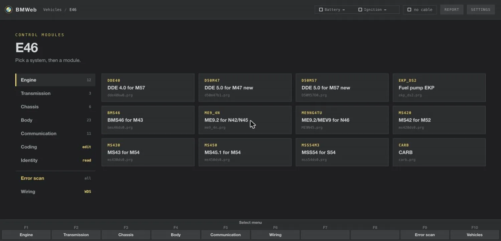
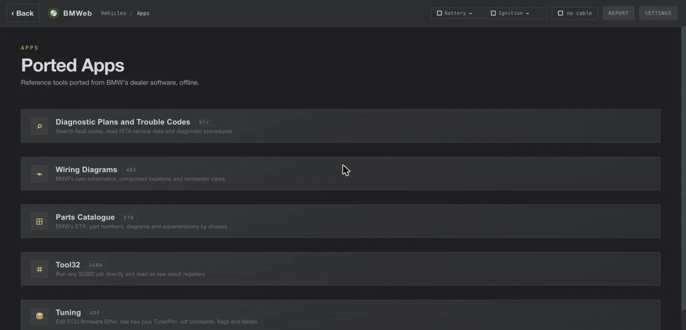
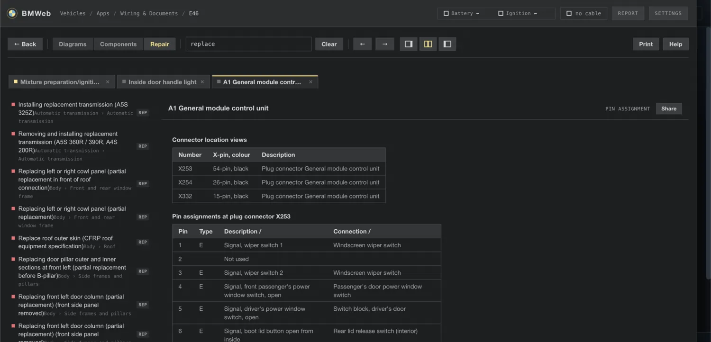
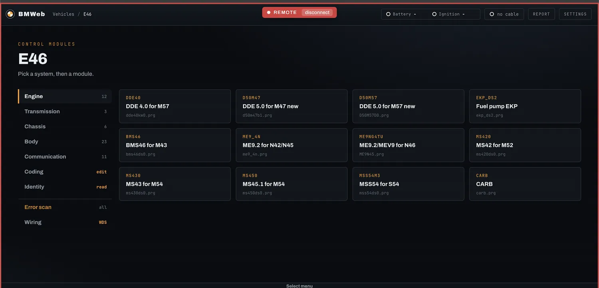

Getting started
Applies to BMW models 1996 to 2006, E36 through E90
Free and open source. Nothing to install.
Diagnostics for your BMW, in a browser.
Plug a cheap cable into the car, open BMWeb, and see what the dealer's computer sees: fault codes in plain English, live engine data, and component tests. The same screens BMW technicians used.
Open BMWeb Chrome or Edge on a computer. No Windows, no virtual machine.1What you need
| K+DCAN cable | The common USB diagnostic cable for these BMWs. About $20, sold everywhere online. Nothing else to buy. |
|---|---|
| A BMW from 1996 to 2006 | 3, 5 and 7 Series, X3, X5, Z4, Z8, Mini and more. See the full list of chassis in the app. |
| Chrome or Edge on a computer | Any Mac, Windows or Linux machine. The browser talks to the cable directly; there is nothing to download or install. |
2Connecting
- 2.1Plug in the cable.
One end in the car, the other in your computer. Turn the ignition on.
- 2.2Open BMWeb and pick your car.
Choose your model, and allow the cable when the browser asks.
- 2.3Read your car.
Scan every module for faults, watch live data, or test components.
3The screens




4Questions
- Is it safe to poke around?
- Reading is completely safe, you're only listening. Anything that changes the car asks you first.
- Does it cost anything?
- No. BMWeb is free and open source. Your only cost is the cable.
- Will it work on my phone?
- For everything that does not touch the car. Download the offline zip and open it in Microsoft Edge (iPhone and Android are both supported) for fault lookup, wiring diagrams, documents and parts. Talking to the car needs the K+DCAN cable and a desktop browser with Web Serial, which phones do not have.
- Do I need internet at the car?
- Only the first time. Once BMWeb has loaded, it works offline, and there are offline downloads too.